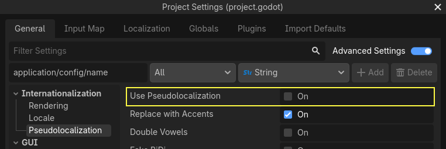

Pseudolocalization
Giới thiệu
Khi làm một trò chơi, quá trình bản địa hóa thường bắt đầu khi việc phát triển đã hoàn tất. Điều này có nghĩa là trong quá trình phát triển chưa có bản dịch để kiểm tra xem dự án đã được quốc tế hóa đúng cách hay chưa.
Godot cung cấp pseudolocalization như một cách để kiểm tra mức độ vững chắc của dự án khi có thay đổi locale. Pseudolocalization mô phỏng những thay đổi có thể xảy ra trong quá trình bản địa hóa. Nhờ vậy, mọi vấn đề liên quan đến quốc tế hóa có thể được nhận ra sớm trong quá trình phát triển.
Xem thêm
Bạn có thể xem cách pseudolocalization hoạt động thực tế qua dự án demo Pseudolocalizaton.
Bật và cấu hình pseudolocalization
Việc bật pseudolocalization và các cấu hình liên quan đơn giản chỉ là đánh dấu một ô checkbox trong cài đặt dự án. Các cài đặt này nằm ở sau khi bật nút trong hộp thoại cài đặt dự án:

Pseudolocalization cũng có thể được bật/tắt khi chạy từ script.
Các cấu hình pseudolocalization
Pseudolocalization trong Godot có thể được thiết lập tùy theo trường hợp sử dụng cụ thể của dự án. Dưới đây là các thuộc tính pseudolocalization có thể cấu hình qua cài đặt dự án:
replace_with_accents: Thay thế mọi ký tự trong chuỗi bằng biến thể có dấu của chúng. "The quick brown fox jumped over the lazy dog" sẽ được chuyển thành "Ŧh̀é q́üíćḱ ḅŕôŵή f́ôx́ ǰüm̀ṕéd́ ôṽéŕ ŧh̀é łáźý d́ôǵ" khi bật cài đặt này. Cài đặt này có thể dùng để phát hiện các chuỗi chưa dịch (vì chúng sẽ không có dấu), đồng thời cũng hữu ích để kiểm tra glyph bị thiếu trong (các) font mà dự án sử dụng.double_vowels: Nhân đôi mọi nguyên âm trong chuỗi. Đây là cách xấp xỉ tốt để mô phỏng việc văn bản dài ra khi bản địa hóa. Có thể dùng nó để kiểm tra văn bản bị tràn khỏi container (chẳng hạn như nút).fake_bidi: Giả lập văn bản hai chiều (mô phỏng văn bản từ phải sang trái). Tính năng này hữu ích để mô phỏng các hệ chữ viết từ phải sang trái nhằm kiểm tra các vấn đề bố cục tiềm ẩn có thể xảy ra với những ngôn ngữ dùng chữ viết từ phải sang trái.override: Thay thế mọi ký tự trong chuỗi bằng dấu hoa thị (*). Tính năng này hữu ích để nhanh chóng tìm ra văn bản chưa được bản địa hóa.expansion_ratio: Có thể dùng trong trường hợp việc nhân đôi nguyên âm không phải là cách xấp xỉ đủ tốt. Cài đặt này đệm thêm dấu gạch dưới (_) vào chuỗi và kéo dài nó theo tỉ lệ đã cho. Tỉ lệ kéo dài0.3là đủ cho hầu hết các trường hợp thực tế; nó sẽ tăng độ dài chuỗi thêm 30%.prefixvàsuffix: Các thuộc tính này có thể dùng để chỉ định tiền tố và hậu tố bao quanh văn bản.skip_placeholders: Bỏ qua các placeholder định dạng chuỗi như%svà%f. Tính năng này hữu ích để xác định những chỗ cần thêm đối số để chuỗi định dạng hiển thị đúng.
Tất cả các thuộc tính này có thể được bật/tắt khi cần tùy theo trường hợp sử dụng của dự án.
Cấu hình pseudolocalization khi chạy
Pseudolocalization có thể được bật/tắt khi chạy bằng thuộc tính pseudolocalization_enabled trong TranslationServer. Tuy nhiên, nếu cần cấu hình các thuộc tính pseudolocalization khi chạy, bạn có thể cấu hình trực tiếp bằng ProjectSettings.set_setting(property, value) rồi gọi TranslationServer.reload_pseudolocalization(), phương thức này sẽ phân tích lại các thuộc tính pseudolocalization và tải lại pseudolocalization. Đoạn mã sau sẽ bật các thuộc tính replace_with_accents và double_vowels rồi gọi reload_pseudolocalization() để các thay đổi có hiệu lực:
ProjectSettings.set_setting("internationalization/pseudolocalization/replace_with_accents", true)
ProjectSettings.set_setting("internationalization/pseudolocalization/double_vowels", true)
TranslationServer.reload_pseudolocalization()